ipad
기존: 과거 실제 화면맵 (개별 소스·기기·접근성·자세 출처 미상). 개편: 실제 촬영 소스 fa4ba7383f1e08c70585e84e0bddaa30d6f41bf1; 현재 소스에서 촬영한 화면. 기기 2E6BD714-6859-4C4C-8F28-739157173E3B.
기존 화면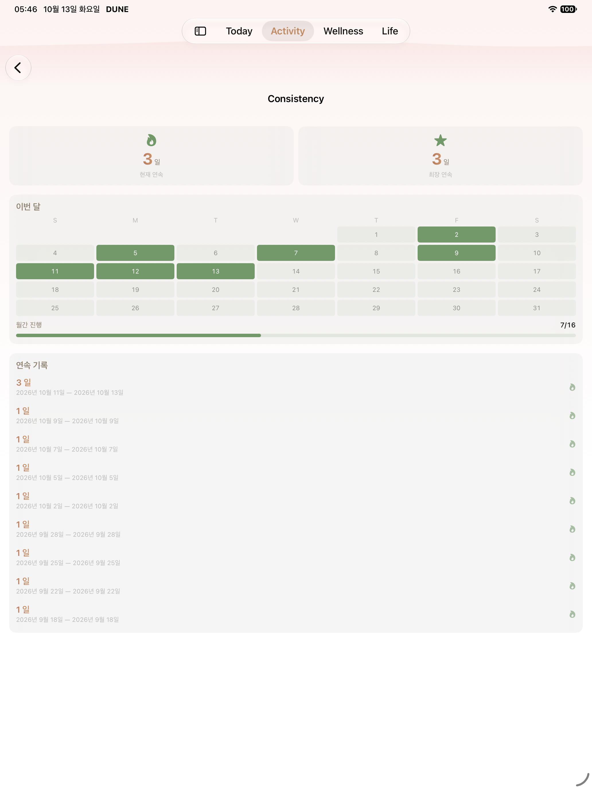
개편 실제 화면 대응하는 접근성 기록
대응하는 접근성 기록기존 화면의 개별 출처는 미상입니다. 개편 화면은 각 실제 촬영의 소스와 기기 정보를 기록합니다. 소스·실제 화면·자료 연결을 기록한 범위에서 검토했습니다. 최종 PR 결과는 별도로 확인합니다.
기존: 과거 실제 화면맵 (개별 소스·기기·접근성·자세 출처 미상). 개편: 실제 촬영 소스 fa4ba7383f1e08c70585e84e0bddaa30d6f41bf1; 현재 소스에서 촬영한 화면. 기기 BB138F5C-4449-4A7D-B70C-A5F01D27EB99.
기존 화면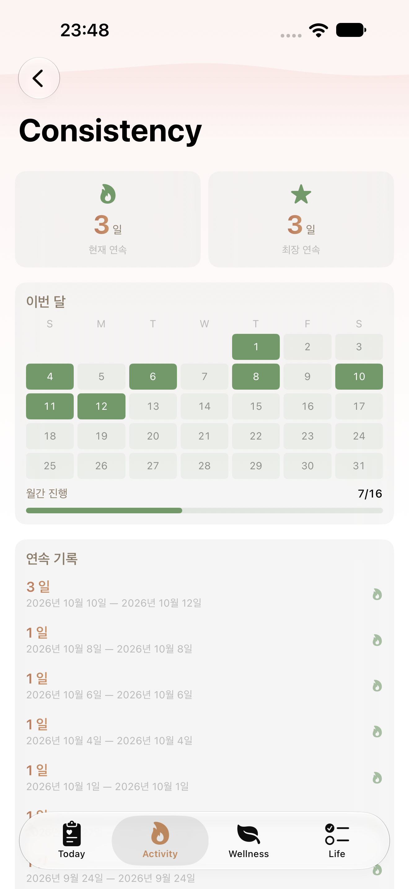
개편 실제 화면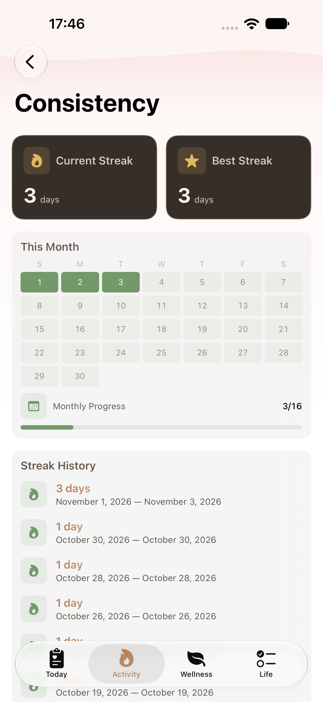
대응하는 접근성 기록기존: 과거 실제 화면맵 (개별 소스·기기·접근성·자세 출처 미상). 개편: 실제 촬영 소스 fa4ba7383f1e08c70585e84e0bddaa30d6f41bf1; 현재 소스에서 촬영한 화면. 기기 2E6BD714-6859-4C4C-8F28-739157173E3B.
기존 화면
개편 실제 화면대응하는 접근성 기록기존: 과거 실제 화면맵 (개별 소스·기기·접근성·자세 출처 미상). 개편: 실제 촬영 소스 be23b071d82b0a821c4e0d7fd04613e0ccdd2f03; be23 일반 글씨만 통과한 혼합 실패 실행; 과거 1 days 문구와 자세 지연 확인을 보존. 기기 31D08536-7B26-4FF7-BABD-4FAD49578596.
기존 화면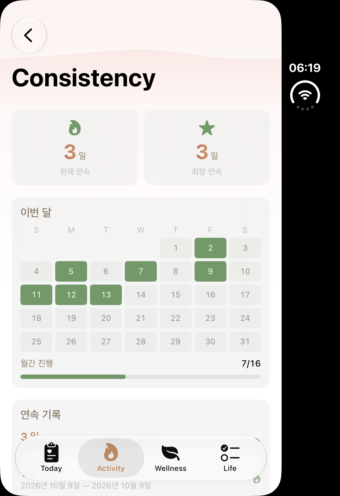
개편 실제 화면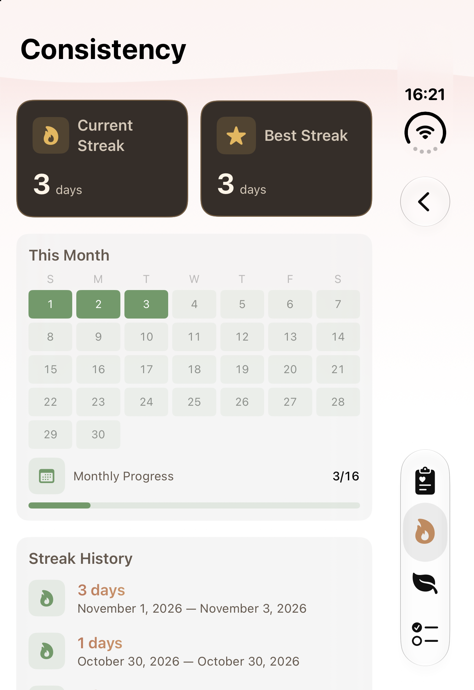
대응하는 접근성 기록기존: 과거 실제 화면맵 (개별 소스·기기·접근성·자세 출처 미상). 개편: 실제 촬영 소스 fa4ba7383f1e08c70585e84e0bddaa30d6f41bf1; 현재 소스에서 촬영한 화면. 기기 31D08536-7B26-4FF7-BABD-4FAD49578596.
기존 화면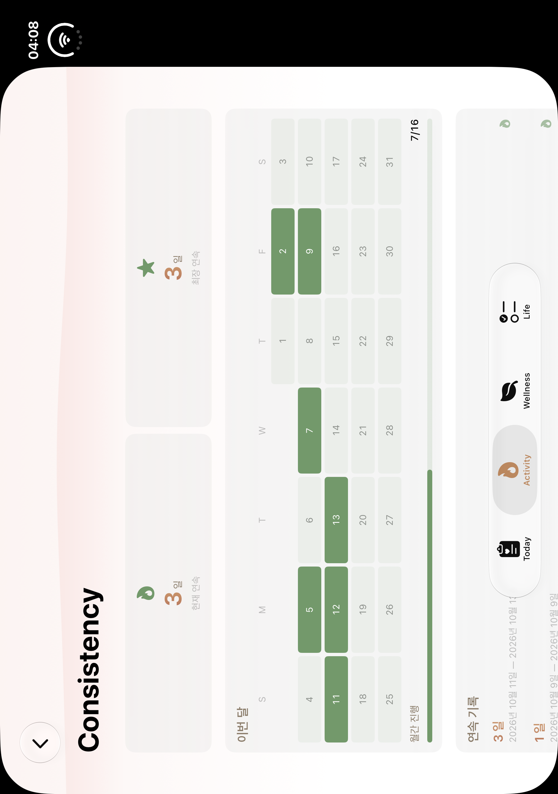
개편 실제 화면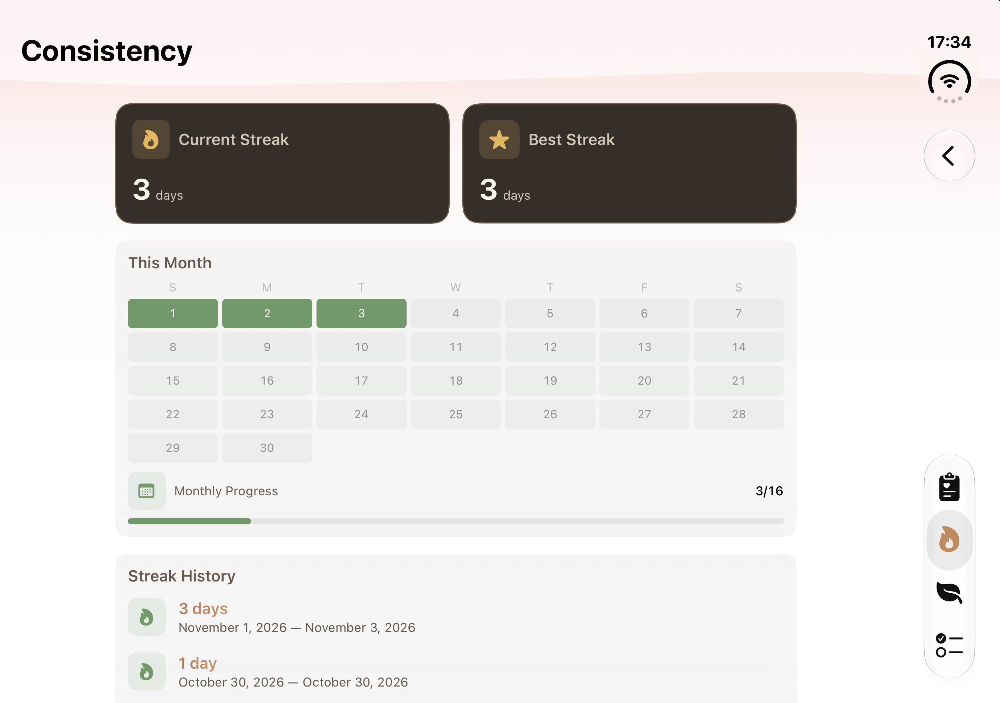
대응하는 접근성 기록실제 3c 촬영으로 달력 검사는 통과했습니다. 이후 단수 문구가 수정되어 과거 1 days 문구가 남아 있을 수 있으며 현재 fa4 캡처가 아닙니다.
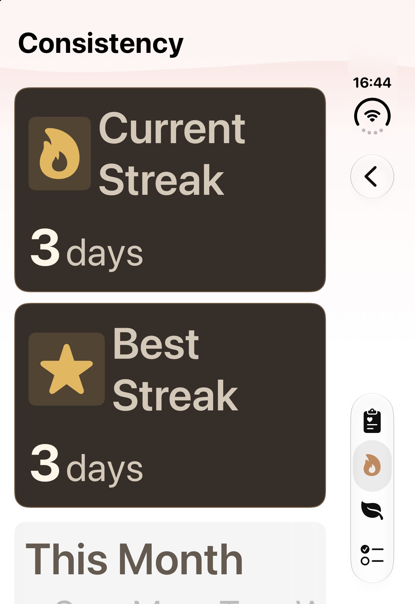
대응하는 접근성 기록실제 3c 촬영으로 달력 검사는 통과했습니다. 이후 단수 문구가 수정되어 과거 1 days 문구가 남아 있을 수 있으며 현재 fa4 캡처가 아닙니다.
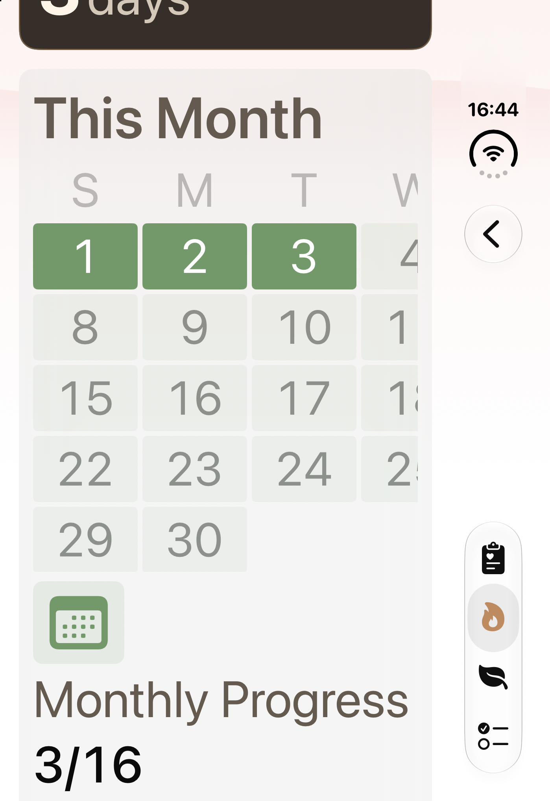
대응하는 접근성 기록실제 3c 촬영으로 달력 검사는 통과했습니다. 이후 단수 문구가 수정되어 과거 1 days 문구가 남아 있을 수 있으며 현재 fa4 캡처가 아닙니다.
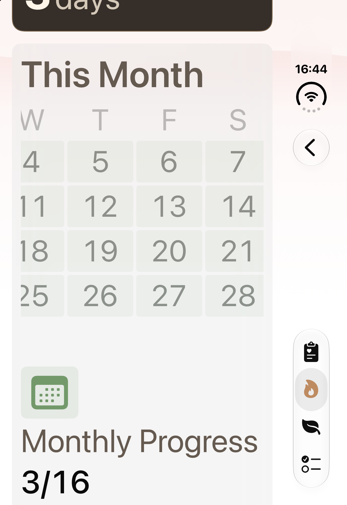
대응하는 접근성 기록실제 3c 촬영으로 달력 검사는 통과했습니다. 이후 단수 문구가 수정되어 과거 1 days 문구가 남아 있을 수 있으며 현재 fa4 캡처가 아닙니다.
이벤트 006의 이미지는 앞선 날짜 캡처와 동일하여 반복 표시하지 않습니다. 실제 월간 진행률과 이력은 다음 007 캡처에서 확인합니다.
이벤트 006 원본 이미지대응하는 접근성 기록실제 3c 촬영으로 달력 검사는 통과했습니다. 이후 단수 문구가 수정되어 과거 1 days 문구가 남아 있을 수 있으며 현재 fa4 캡처가 아닙니다.
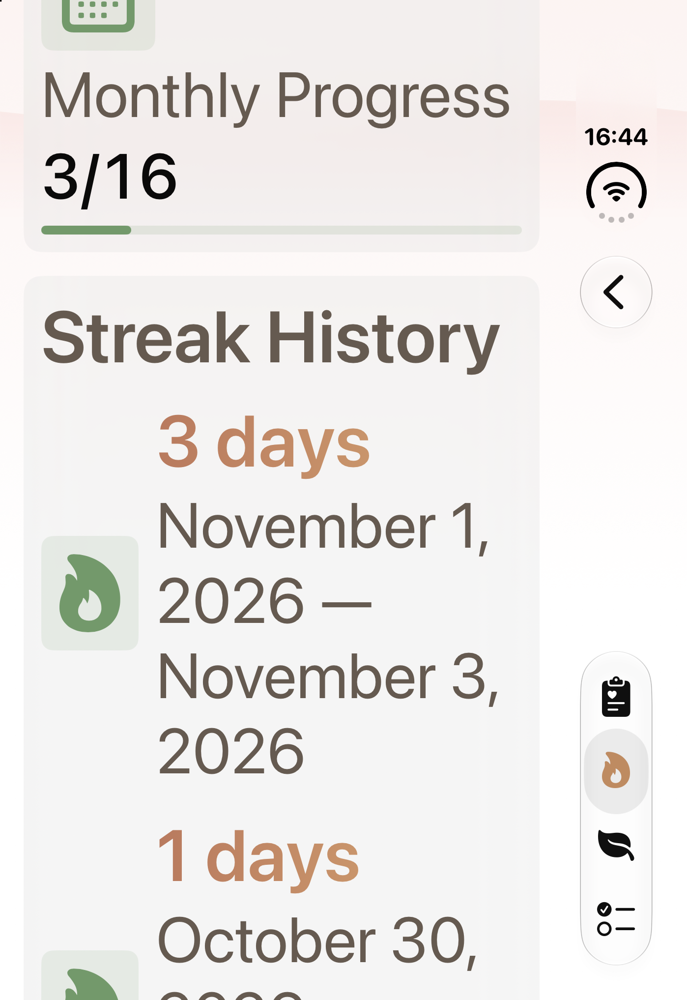
대응하는 접근성 기록